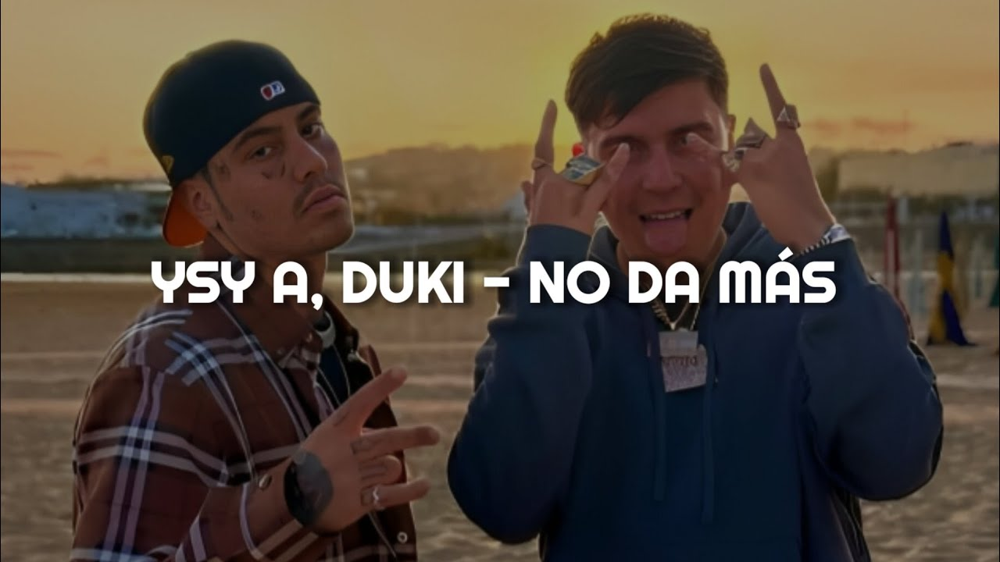

NO DA MAS
Autor:Duki y Ysy A
productores:oniria y yesan
Nos conocemo' tanto y a vece' somo' extraños
Te pienso trescientos sesenta días al año
¿Cómo algo que te hace tan bien te hace tanto daño?
Y no da más
Nos hacemos mal, pero no tan mal
Yo no soy un santo pero vos bardea'
Si seguimo' así, nos vamos a odiar
Y no da más
Tantos años vos y yo
No da más
Discutiendo sin razón
Y no da más
Harto de esta situación
Y no da más
Eh, yeah
Somo' igual que estas cancione', unos rompecorazone'
Sé que no hay droga que pueda lograr que ella me perdone
Cuando me habla tu cuerpo, siento que tu alma no responde
Yo no soy como estos muerto', vivo dándote el doble
Pero no puedo entender por qué te pierdo
Me pierdo y en mi mente caen los recuerdos
Antes moría por verte y ahora por vernos
Sé que tengo que ser fuerte y siento que no puedo
Fuera de nuestros vínculos, fuera de nuestros título'
No hay más película' que nuestro amor con subtítulo'
Seguimo' dando círculos, haciendo el ridículo
Apena' terminamo' y ya empezamo' otro capítulo
Y no da más
Nos hacemos mal, pero no tan mal
Yo no soy un santo pero vos bardea'
Si seguimo' así, nos vamos a odiar
Y no da más
Tantos años vos y yo
No da más
Discutiendo sin razón
Y no da más
Harto de esta situación
Y no da más
Ya se rompió el contador de mentira'
Toda' las que te dije, toda' las que me digas
Cuando te estés por ahogar, yo soy tu salvavidas
Sacame años de muerte, te doy mis años de vida
Y, ¿cómo no?
¿Qué nos pasó?
Pusimo' en juego la lealtad de los do'
Somos hielo y fuego, entre el diablo y Dio'
Y no da más
Nada más me duele que termine así
Lo fácil lo hicimo' difícil
Me hiciste ver cosas que no sé de mí
Lo estuve hablando con el YSY
Oniria shot
雪山, 你在哪裡?!
Y no da más
Nos hacemos mal, pero no tan mal
Yo no soy un santo pero vos bardea'
Si seguimo' así, nos vamos a odiar
Y no da más
